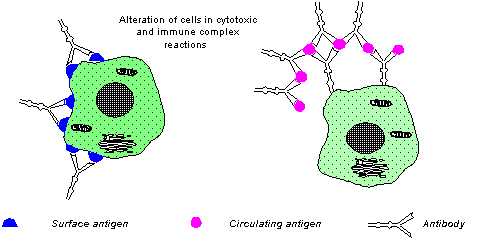
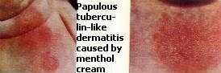
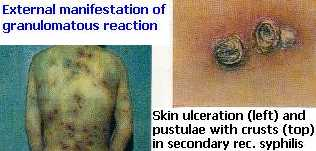

CLASSIFICATION OF HYPERSENSITIVITY, BASIC TERMINOLOGY
Hypersensitivity diseases can be classified on the basis of the immunologic mechanisms that mediate the disease. This approach is of value in clarifying the manner in which the immune response ultimately causes tissue injury and disease.
According to the classical system by J. Coombs and P. Gell (1932 and later), the immunopathological reactions are classified into two types:
- Those, in which circulating immunoglobulins are essential, known as immediate type hypersensitivity (ITH).
- Those, occurring without any contribution of circulating antibodies exclusively through specific clones of cellular effectors, called delayed type hypersensitivity (DTH).
During the early period of Immunology development ITH were often referred to as “humoral immunity” and DTH were commonly mentioned as “cellular immunity”. But, it is necessary to stress here, that these historical terms are not precise. Soluble immunoglobulin production also requires active contribution of T and B-lymphocytes and APC. And vice versa, DTH is not possible without the action of interleukines, which are “humoral”, if one prefers archaic language. Hence, as all immune phenomena, in fact, depend on both cells and their soluble products, it does not make sense to use terms “humoral” or “cellular” reactions any longer.

An important is the principal difference between ITH and DTH. To discuss this, we need to remind that in Allergology primary immune response for a given allergen is traditionally titled with the specific term: “sensitization” (see below).
ITH are mediated by specific circulating antibodies against the appropriate allergens. After completion of primary immune response these immunoglobulins may present in sufficient titers everywhere in circulation and in many tissues, therefore their interaction with new portions of the same allergen can progress very rapidly.
That’s why, ITH is characterized by relatively quick appearance of clinical symptoms after contact of already sensitized organism with an allergen, once caused sensitization. This time interval (lag phase of inflammation) may be as short as few seconds, but commonly is 1-4 h (early phase finishes within 24 hours).
Unlike this, the very period of sensitization (time, required for cumulating of high Ig titers in course of primary immune response for an allergen never met before) in ITH is quite long: it occupies between 7 and 12 days. Approximately 1 week is necessary to achieve APC function, antigen processing and presentation, cell cooperation and MHC-mediated recognition, cytokines release, and, most time consuming step - clonal expansion of Th and B-lymphocytes and plasma cell appearance. And almost the same time will take plasma cells “ to pump up” the antibodies’ titers.
DTH does not depend on Ig and needs the cooperation of different cellular effectors in so called “productive inflammation”.
The DTH commonly gives clinical manifestations in 48-72 h after contact of sensitized organism with an allergen, previously already triggered primary immune response. It can be explained by relatively low rate of cellular migration into the foci of DTH-ruled inflammation. Although it sounds paradoxally in comparison with the name delayed hypersensitivity, the very process of sensitization in DTH can be achieved in relatively shorter terms – between 3 and 6 days after primary allergenic challenge. It is not surprising, because in DTH an organism is ready for boosted responses as soon as clonal expansion of T-cells is finished, with no need to cumulate any soluble secretory products. So, DTH are prepared more quickly, than ITH, but manifested a bit slower.
These two types of hypersensitivity differ also in the ways of passive immunization. The ability for ITH towards a given allergen (“sensitization”) can be transferred from sensitized donor to non-sensitized recipient via donor’s blood serum (or its immunoglobulin fraction).
The ability for DTH towards a given allergen can be transferred from sensitized donor to non-sensitized recipient via donor’s whole blood, or T lymphocytes (for example with bone marrow transplantation). This way of passive immunization is called adoptive transfer.
Commonly an allergen provokes mostly DTH mechanisms if it is able to persist within APC for a long time, because in this case it will be presented via endocellular rout, with the help of MHC 1 Class proteins. CD8+ effectors will recognize it and form the responding clones (see above “Antigen presentation”). The allergens, rapidly destroyed after phagocytosis, will trigger, predominantly, ITH mechanisms, as they are processed via exocellular route, with the help of MHC 2 Class proteins and recognized primarily by CD4+ lymphocytes. The result may look as exsudative (alterative) inflammation. From this point of view, it is understandable that DTH can be evoked by autoantigens and grafts, as well as by different germs, able to survive within host cells (mycobacteria, protozoa, fungi etc.). DTH proceeds as gradually increasing productive inflammation with a considerable role of cytokines.
Principally, the same complex allergen is able to start both types of hypersensitivity in parallels, or in different equations, depending on rout of its administration, its physical and chemical properties and many other factors. For example, autoimmune thyroiditis is accompanied both with T-cell infiltration of the involved gland (symptom of DTH) and high titers of circulating autoantibodies against thyroid myeloperoxidase (manifestation of ITH).
The allergologists (as well as authors of fairy tales) are very fond of the number 3. Owing to this, not only wizards commonly execute 3 wishes and warriors commit 3 heroic deeds. Almost all immunological classifications practically always triple.
The classification of hypersensitivity, by P. Gell, is not an exception.
Immediate hypersensitivity reactions are divided into 3 categories:
- In category I , the immune response releases so called reagins (in humans IgE and IgG4). These antibodies are able to stimulate degranulation of certain cellular types, supplied with reagin-sensitive receptors. The triggered cells (mastocytes, basophils and later eosinophils), in turn, release and produce vasoactive and spasmogenic substances that act on vessels, smooth muscle, glands and other targets, thus altering their function. This is called anaphylaxis.
- Category II of immediate hypersensitivity is mediated by antibodies of other isotypes directed toward self or alien antigens, present on the surface of cells or other tissue components. The antibodies aim some effector cytotoxic mechanisms, including complement, phagocytosis and Ig-dependent cytotoxicity on matched target cells, predisposing the cells to lysis. The classic name for the phenomena of this category is cytotoxic reactions.
- In category III the disorders are best remembered as "immune complex reactions," in which humoral antibodies of different classes bind soluble of affixed antigens and form complexes. The most essential detail of these phenomena is abnormally decreased clearance of such complexes, which are not eliminated properly, but sediment on endothelium or other tissue structures, causing activation of cascade proteolitic mediators and clotting. This is resulted in vasculitis and/or other forms of inflammation. The fractions of complement then attract and activate neutrophils, which, partly through the release of neutrophilic lysosomal enzymes, produce tissue damage.
In the year 1975 P. Gell and later G. Bendixen (1980) has attempted to upgrade this trichotomic classification of ITH. 2 additional categories of ITH were delineated:
- Immunological block or stimulation of functional cellular receptors by means of antibodies.
- Antibody-dependent cellular cytotoxicity.
But, both mechanisms were proven to be just varieties of category II course, so authors are convinced that their separation is not practical. Latest sources reverted to classic 3 categories (I. Roitt et al.; 1994).
As the reader perhaps has already guessed, delayed hypersensitivity (sometimes referred to as 4-th type of reactions) is also subdivided into 3 categories (by A. Hawkrogers, K. Brostoff and D. Male, 1994):
1. If the allergen persists within epidermis, the manifestation of DTH looks like contact-type dermatitis with characteristic vesicular rash.

2. Deeper penetration and persisting of an allergen within derma gives tuberculin-like reaction manifested in papulous dermatitis.

3. In systemic dissemination of an allergen through the whole organism or its subcutaneous injection, DTH proceeds like granulomatous reaction with production of characteristic foci of productive inflammation – granulomata – at the sites of allergen persistence. Every granuloma is a group of chronically activated macrophages and their descends (epithelioid cells) plus attracted lymphocytes and other WBC.
All these 3 categories of DTH involve tissue injury in which cell-mediated immune responses with sensitized lymphocytes are the cause of the cellular and tissue injury.
Prototypes of each of these immune mechanisms are presented in the following sections.
NEXT CHAPTER OR